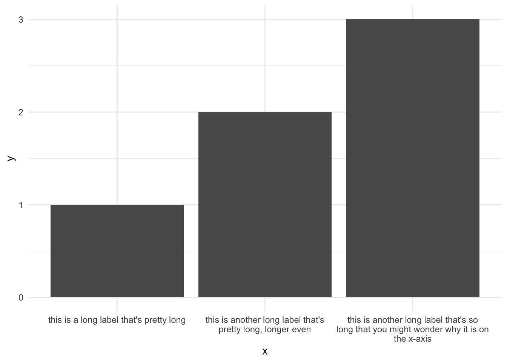
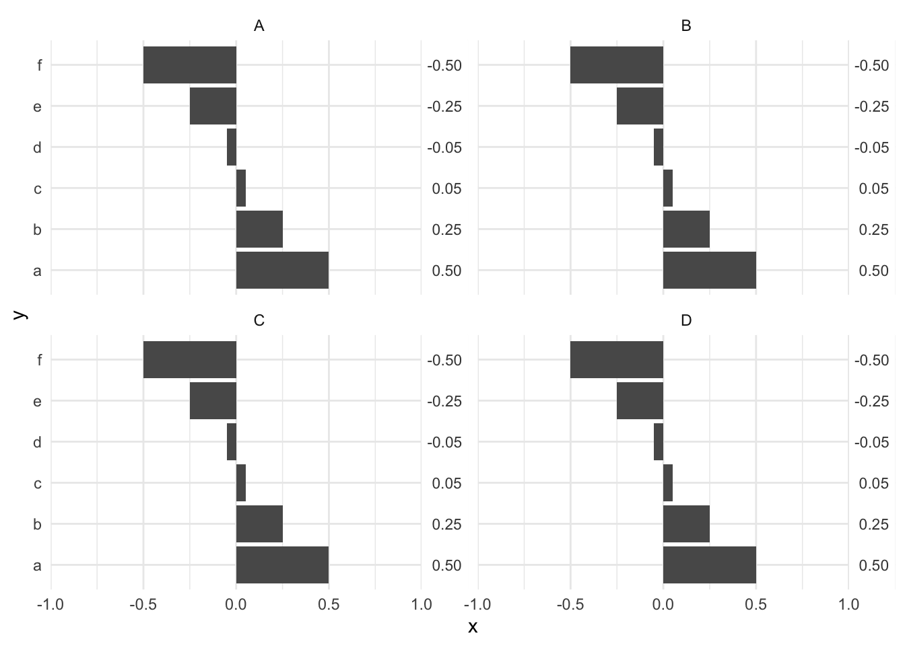

4 Plotting labels
Sometimes you want to add labels to a plot. This could be to make it clear to which group a geom belongs to or perhaps to also plot the numeric values so it is clear what the exact values are. This is not always easy to do, so in this chapter we show some basic plots with labels and more advanced techniques.
4.1 Long labels
Sometimes you have very long labels (e.g., factor levels) that overlap each other when you plot them in a graph. One way to solve this is by using the label_wrap() function from the scales package.
Code
data <- tibble(
x = c(
"this is a long label that's pretty long",
"this is another long label that's pretty long, longer even",
"this is another long label that's so long that you might
wonder why it is on the x-axis"
),
y = 1:3
)
ggplot(data, aes(x = x, y = y)) +
geom_col() +
scale_x_discrete(labels = label_wrap(40)) +
theme_minimal()
4.2 Labels next to the plot
If you want to label, for example, every bar plot, but the height of the bar could cover the entire range of the plot area, then you may want to put labels next to the plot. This is tricky to do, but below is sort of a hacky solution to get it done. The trick is to add a rectangle to the plot and position it where you want the labels to go. Since this will be outside of the grid area of the plot, we have to specify the limits of the plotting area (see scale_x_continuous() in the code below). Optionally you can reduce the default spacing between the plots by setting mult to c(0, 0).
Code
data <- tibble(
x = rep(c(.5, .25, .05, -.05, -.25, -.5), 4),
y = rep(c("a", "b", "c", "d", "e", "f"), 4),
facet = rep(c("A", "B", "C", "D"), each = 6)
)
ggplot(data, aes(x = x, y = y)) +
geom_col() +
facet_wrap(~ facet) +
geom_rect(
aes(xmin = 1, xmax = Inf, ymin = -Inf, ymax = Inf),
fill = "white"
) +
geom_text(
aes(x = 1.125, y = y, label = format(round(x, 2), nsmall = 2)),
size = 3,
alpha = .8,
hjust = .5
) +
scale_x_continuous(
limits = c(-1, 1.25),
expand = expansion(mult = c(0, 0))
) +
theme_minimal()